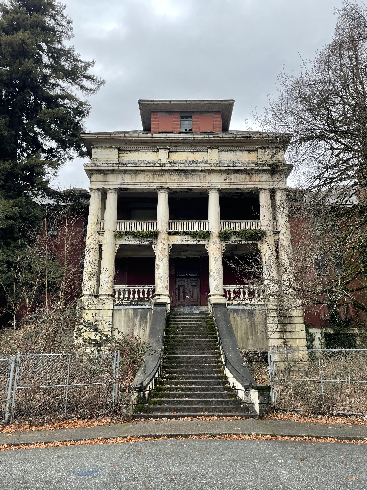
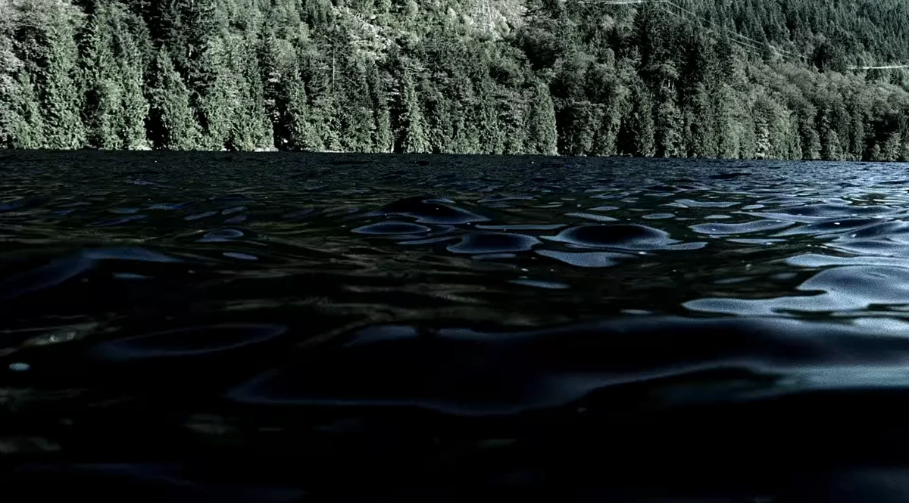
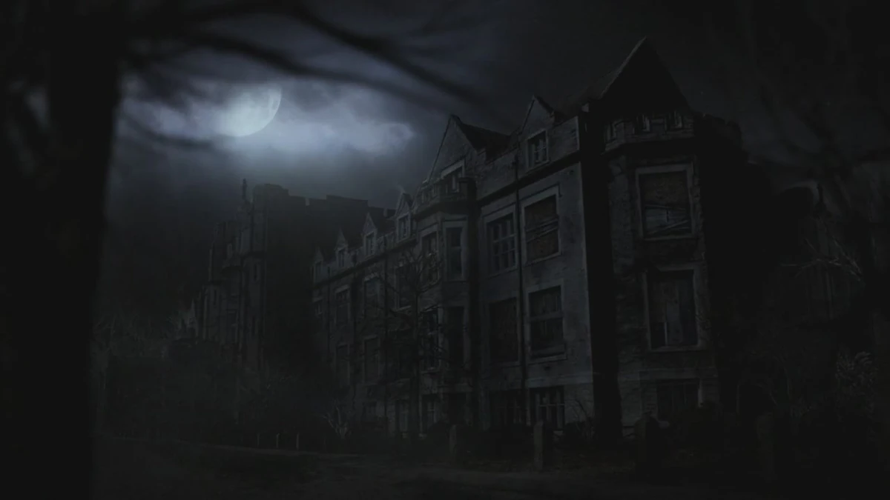
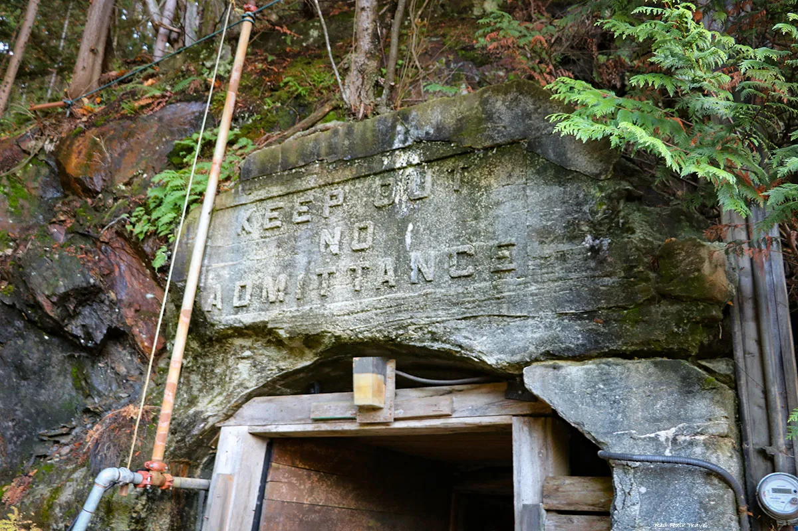

Location 01
Every Abandoned Asylum: Riverview Hospital
Located in Coquitlam, British Columbia, this massive, mostly abandoned psychiatric facility was one of the most heavily used filming locations in the entire series. It stood in for Roosevelt Asylum, countless hospitals, prisons, and demonic hideouts throughout all 15 seasons.
Find on Map
Location 02
Small Town America: Fort Langley
Whenever Sam and Dean rolled into a quaint, seemingly innocent Midwestern town, there was a good chance they were actually in Fort Langley, BC. Its yellow Community Hall and main street storefronts appeared in numerous episodes, most notably "Route 666".
Find on Map
Location 03
Lake Manitoc: Buntzen Lake
Surrounded by dense, moody pine forests, Buntzen Lake in Anmore was the perfect stand-in for backwoods supernatural occurrences. It was famously used in the Season 1 episode "Dead in the Water," where a vengeful spirit haunted the depths of Lake Manitoc.
Find on Map
Location 04
St. Mary's Convent: St. Andrew's-Wesley Church
In the epic Season 4 finale "Lucifer Rising," Azazel slaughters a group of nuns to speak to Lucifer. This dark and dramatic scene was filmed inside the stunning, gothic interior of St. Andrew's-Wesley United Church in downtown Vancouver.
Find on Map
Location 05
Abandoned Warehouses: Britannia Mine Museum
If the Winchester brothers were investigating an old, rusted-out industrial site or fighting vampires in a gritty warehouse, they were often at the historic Britannia Mine Museum. Its sprawling, multi-level copper mill provided the perfect dark, rusted atmosphere.
Find on Map